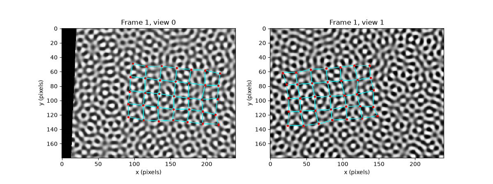

Note
Go to the end to download the full example code.
Initializing a displacement by optical flow#
A correlation term only converges from an initial displacement close to the solution (a few
pixels). This example estimates a large displacement of a plate seen by two cameras with
pysdic.workflows.compute_optical_flow_displacement() (optical flow and triangulation of
the vertices), then refines it with a pysdic.SDICCorrelationTerm.
Important
Requires the optional package open3d (ray casting of the 3D surface).
The scene#
Two cameras look at a speckled plate from 5 units above (60 pixels per unit). Between the frames 0 and 1, the plate rotates by 3° around \(Z\) and translates by \((0.25, -0.15, 0.2)\): a motion of about 15 pixels in the images.
import numpy
from scipy.spatial.transform import Rotation
from pysdic import (
Camera, Image, PerspectiveExtrinsic, PinholeIntrinsic, add_gaussian_noise, compute_projected_roi,
compute_wave_speckle, create_3d_quadrangle_4_heightmap, create_bicamera_analysis, generate_synthetic_image,
quantize_image,
)
height, width = 180, 240
cameras = [
Camera(
height, width,
extrinsic=PerspectiveExtrinsic.from_rt(rvec=[numpy.pi, side * 0.15, 0.0], tvec=[side * 0.6, 0.0, 5.0]),
intrinsic=PinholeIntrinsic.from_matrix([[300.0, 0.0, 120.0], [0.0, 300.0, 90.0], [0.0, 0.0, 1.0]]),
)
for side in (1, -1)
]
plate = create_3d_quadrangle_4_heightmap(x_bounds=(-2.5, 2.5), y_bounds=(-2.0, 2.0), n_x=41, n_y=33)
x, y = numpy.linspace(-2.5, 2.5, 500), numpy.linspace(2.0, -2.0, 400)
texture = compute_wave_speckle(numpy.stack(numpy.meshgrid(x, y), axis=-1), wavelength=0.15)
rotation = Rotation.from_rotvec([0.0, 0.0, numpy.radians(3.0)]).as_matrix()
def true_displacement(points: numpy.ndarray) -> numpy.ndarray:
return points @ (rotation - numpy.eye(3)).T + numpy.array([0.25, -0.15, 0.2])
mesh = create_3d_quadrangle_4_heightmap(x_bounds=(-1.0, 1.0), y_bounds=(-0.6, 0.6), n_x=7, n_y=5)
truth = true_displacement(mesh.coordinates)
def acquire(camera: Camera, frame: int, seed: int) -> Image:
rendered = generate_synthetic_image(camera, plate, texture, displacement=frame * true_displacement(plate.coordinates), n_samples=2)
data = quantize_image(add_gaussian_noise(rendered[..., 0], std=1.0, seed=seed), bit_depth=8) # uint8 for the optical flow
return Image.from_array(data, roi=compute_projected_roi(mesh, camera, warp_by=frame * truth, margin=10))
images = [[acquire(camera, frame, seed=2 * frame + k) for frame in range(2)] for k, camera in enumerate(cameras)]
analysis = create_bicamera_analysis(mesh, cameras[0], cameras[1], images[0], images[1])
analysis.set_zero_displacement(0)
Optical flow and triangulation#
The vertices are projected in the view (0, 0), followed by optical flow to the view
(1, 0) (temporal motion), then to the view (1, 1) (stereo motion), and triangulated
from the two views of the frame 1. A vertex lost in a view gets a NaN displacement
(result.measured is False): it takes here the mean displacement of the measured ones.
from pysdic.workflows import compute_optical_flow_displacement
result = compute_optical_flow_displacement(analysis, ref_frame=0, ref_view=0, def_frame=1, def_views=(0, 1))
print(f"{result.measured.sum()} / {mesh.n_vertices} vertices measured, "
f"max distance to the rays: {numpy.nanmax(result.ray_distances):.3f}")
estimate = numpy.where(result.measured[:, numpy.newaxis], result.displacement, numpy.nanmean(result.displacement, axis=0))
print(f"Maximum error: {numpy.abs(truth).max():.3f} (zero displacement) -> {numpy.abs(estimate - truth).max():.3f} (optical flow)")
35 / 35 vertices measured, max distance to the rays: 0.026
Maximum error: 0.283 (zero displacement) -> 0.425 (optical flow)
The vertices followed in the two views of the frame 1 (red) and the mesh displaced by the estimate (cyan).
import matplotlib.pyplot as plt
from pysdic import ImagePlotter
fig, axes = plt.subplots(1, 2, figsize=(12, 4.5))
for k, ax in enumerate(axes):
plotter = ImagePlotter(analysis.get_view(1, k), ax=ax)
plotter.add_image()
plotter.add_mesh(mesh, warp_by=estimate, show_faces=False, edge_color="cyan", vertex_size=2)
plotter.add_point_cloud(result.image_points_def[k], projected=False, color="red", size=8)
plotter.set_title(f"Frame 1, view {k}")
plt.show()

Refinement by correlation#
The estimate initializes the frame 1 of a correlation term (temporal pairings of both cameras and stereo pairing of the frame 1), which converges to the subpixel solution.
import pysolvegn
from pysdic import Pairing, SDICCorrelationTerm, SDICUnknowns
from pysdic.workflows import create_grid_integration_points
analysis.set_displacement(1, estimate)
pairings = [Pairing.temporal(0, 0, 1), Pairing.temporal(1, 0, 1), Pairing.stereo(1, 0, 1)]
unknowns = SDICUnknowns([1], [])
correlation = SDICCorrelationTerm(analysis, unknowns, create_grid_integration_points(mesh, 6), pairings)
solution = pysolvegn.solve(terms=[correlation.term], p0=analysis.pack_unknowns(unknowns), max_iteration=30)
analysis.apply_unknowns(unknowns, solution.parameters)
print(f"Maximum error after correlation: {numpy.abs(analysis.get_displacement(1) - truth).max():.2e} "
f"({solution.n_iterations} iterations)")
/home/runner/work/pysdic/pysdic/docs/source/../../pysdic/sdic/sdic_term.py:584: RuntimeWarning: 71 out of 2592 equations were filtered because of NaN or infinite residuals or Jacobians.
warnings.warn(
/home/runner/work/pysdic/pysdic/docs/source/../../pysdic/sdic/sdic_term.py:584: RuntimeWarning: 54 out of 2592 equations were filtered because of NaN or infinite residuals or Jacobians.
warnings.warn(
/home/runner/work/pysdic/pysdic/docs/source/../../pysdic/sdic/sdic_term.py:584: RuntimeWarning: 49 out of 2592 equations were filtered because of NaN or infinite residuals or Jacobians.
warnings.warn(
/home/runner/work/pysdic/pysdic/docs/source/../../pysdic/sdic/sdic_term.py:584: RuntimeWarning: 50 out of 2592 equations were filtered because of NaN or infinite residuals or Jacobians.
warnings.warn(
/home/runner/work/pysdic/pysdic/docs/source/../../pysdic/sdic/sdic_term.py:584: RuntimeWarning: 56 out of 2592 equations were filtered because of NaN or infinite residuals or Jacobians.
warnings.warn(
/home/runner/work/pysdic/pysdic/docs/source/../../pysdic/sdic/sdic_term.py:584: RuntimeWarning: 65 out of 2592 equations were filtered because of NaN or infinite residuals or Jacobians.
warnings.warn(
/home/runner/work/pysdic/pysdic/docs/source/../../pysdic/sdic/sdic_term.py:584: RuntimeWarning: 60 out of 2592 equations were filtered because of NaN or infinite residuals or Jacobians.
warnings.warn(
/home/runner/work/pysdic/pysdic/docs/source/../../pysdic/sdic/sdic_term.py:584: RuntimeWarning: 66 out of 2592 equations were filtered because of NaN or infinite residuals or Jacobians.
warnings.warn(
/home/runner/work/pysdic/pysdic/docs/source/../../pysdic/sdic/sdic_term.py:584: RuntimeWarning: 67 out of 2592 equations were filtered because of NaN or infinite residuals or Jacobians.
warnings.warn(
/home/runner/work/pysdic/pysdic/docs/source/../../pysdic/sdic/sdic_term.py:584: RuntimeWarning: 65 out of 2592 equations were filtered because of NaN or infinite residuals or Jacobians.
warnings.warn(
/home/runner/work/pysdic/pysdic/docs/source/../../pysdic/sdic/sdic_term.py:584: RuntimeWarning: 68 out of 2592 equations were filtered because of NaN or infinite residuals or Jacobians.
warnings.warn(
/home/runner/work/pysdic/pysdic/docs/source/../../pysdic/sdic/sdic_term.py:584: RuntimeWarning: 70 out of 2592 equations were filtered because of NaN or infinite residuals or Jacobians.
warnings.warn(
/home/runner/work/pysdic/pysdic/docs/source/../../pysdic/sdic/sdic_term.py:584: RuntimeWarning: 72 out of 2592 equations were filtered because of NaN or infinite residuals or Jacobians.
warnings.warn(
/home/runner/work/pysdic/pysdic/docs/source/../../pysdic/sdic/sdic_term.py:584: RuntimeWarning: 72 out of 2592 equations were filtered because of NaN or infinite residuals or Jacobians.
warnings.warn(
/home/runner/work/pysdic/pysdic/docs/source/../../pysdic/sdic/sdic_term.py:584: RuntimeWarning: 72 out of 2592 equations were filtered because of NaN or infinite residuals or Jacobians.
warnings.warn(
/home/runner/work/pysdic/pysdic/docs/source/../../pysdic/sdic/sdic_term.py:584: RuntimeWarning: 72 out of 2592 equations were filtered because of NaN or infinite residuals or Jacobians.
warnings.warn(
/home/runner/work/pysdic/pysdic/docs/source/../../pysdic/sdic/sdic_term.py:584: RuntimeWarning: 76 out of 2592 equations were filtered because of NaN or infinite residuals or Jacobians.
warnings.warn(
/home/runner/work/pysdic/pysdic/docs/source/../../pysdic/sdic/sdic_term.py:584: RuntimeWarning: 76 out of 2592 equations were filtered because of NaN or infinite residuals or Jacobians.
warnings.warn(
/home/runner/work/pysdic/pysdic/docs/source/../../pysdic/sdic/sdic_term.py:584: RuntimeWarning: 74 out of 2592 equations were filtered because of NaN or infinite residuals or Jacobians.
warnings.warn(
/home/runner/work/pysdic/pysdic/docs/source/../../pysdic/sdic/sdic_term.py:584: RuntimeWarning: 76 out of 2592 equations were filtered because of NaN or infinite residuals or Jacobians.
warnings.warn(
/home/runner/work/pysdic/pysdic/docs/source/../../pysdic/sdic/sdic_term.py:584: RuntimeWarning: 79 out of 2592 equations were filtered because of NaN or infinite residuals or Jacobians.
warnings.warn(
/home/runner/work/pysdic/pysdic/docs/source/../../pysdic/sdic/sdic_term.py:584: RuntimeWarning: 95 out of 2592 equations were filtered because of NaN or infinite residuals or Jacobians.
warnings.warn(
/home/runner/work/pysdic/pysdic/docs/source/../../pysdic/sdic/sdic_term.py:584: RuntimeWarning: 96 out of 2592 equations were filtered because of NaN or infinite residuals or Jacobians.
warnings.warn(
/home/runner/work/pysdic/pysdic/docs/source/../../pysdic/sdic/sdic_term.py:584: RuntimeWarning: 95 out of 2592 equations were filtered because of NaN or infinite residuals or Jacobians.
warnings.warn(
/home/runner/work/pysdic/pysdic/docs/source/../../pysdic/sdic/sdic_term.py:584: RuntimeWarning: 99 out of 2592 equations were filtered because of NaN or infinite residuals or Jacobians.
warnings.warn(
/home/runner/work/pysdic/pysdic/docs/source/../../pysdic/sdic/sdic_term.py:584: RuntimeWarning: 97 out of 2592 equations were filtered because of NaN or infinite residuals or Jacobians.
warnings.warn(
/home/runner/work/pysdic/pysdic/docs/source/../../pysdic/sdic/sdic_term.py:584: RuntimeWarning: 97 out of 2592 equations were filtered because of NaN or infinite residuals or Jacobians.
warnings.warn(
/home/runner/work/pysdic/pysdic/docs/source/../../pysdic/sdic/sdic_term.py:584: RuntimeWarning: 98 out of 2592 equations were filtered because of NaN or infinite residuals or Jacobians.
warnings.warn(
/home/runner/work/pysdic/pysdic/docs/source/../../pysdic/sdic/sdic_term.py:584: RuntimeWarning: 99 out of 2592 equations were filtered because of NaN or infinite residuals or Jacobians.
warnings.warn(
/home/runner/work/pysdic/pysdic/docs/source/../../pysdic/sdic/sdic_term.py:584: RuntimeWarning: 97 out of 2592 equations were filtered because of NaN or infinite residuals or Jacobians.
warnings.warn(
/home/runner/work/pysdic/pysdic/docs/source/../../pysdic/sdic/sdic_term.py:584: RuntimeWarning: 99 out of 2592 equations were filtered because of NaN or infinite residuals or Jacobians.
warnings.warn(
Maximum error after correlation: 4.35e-01 (30 iterations)
Total running time of the script: (0 minutes 2.388 seconds)